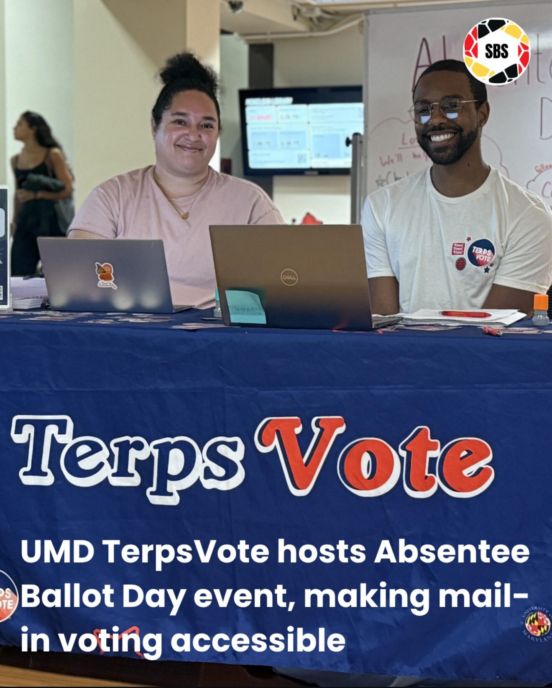
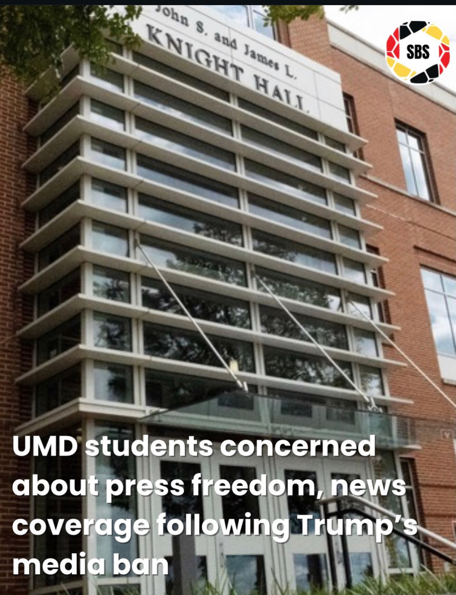
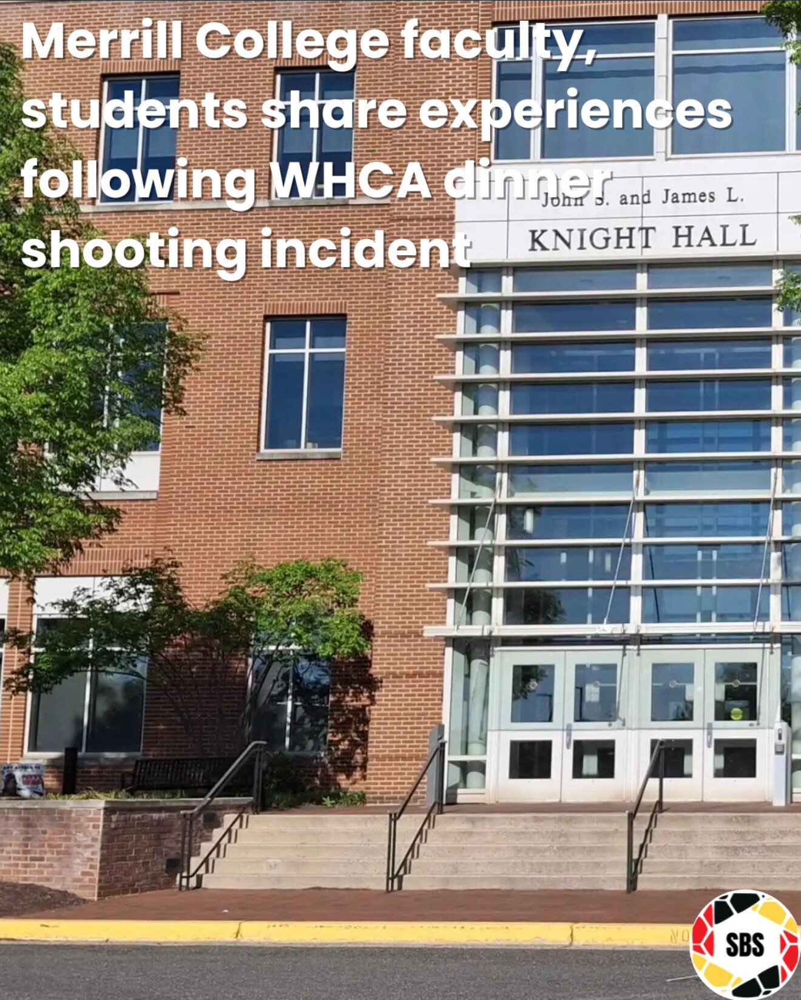
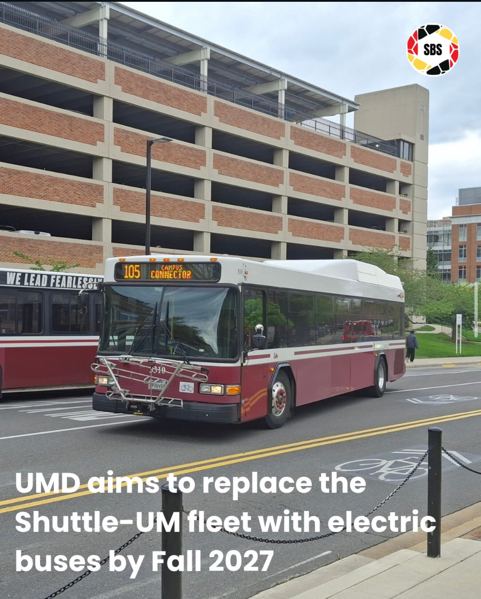

TerpsVote hosted a nonpartisan Absentee Ballot Day to assist students looking to vote by mail.

Students at UMD expressed concern about press freedom following President Donald Trump’s decision to revoke press access for major news outlets.
Author Daniel Immerwahr hosted a Q&A session for his book “How to Hide an Empire” as part of UMD’s First Year Book program.

Philip Merrill College of Journalism faculty and students who attended the White House Correspondents’ Association dinner were present when someone fired shots inside the Washington Hilton Hotel.
Kristan Hawkins hosted a “Change My Mind” public debate outside Hornbake Plaza as part of her “Abortion Is Human Sacrifice” college campus tour.

In an effort to promote sustainable energy use, the University of Maryland is introducing two fully electric buses to the Shuttle-UM fleet.